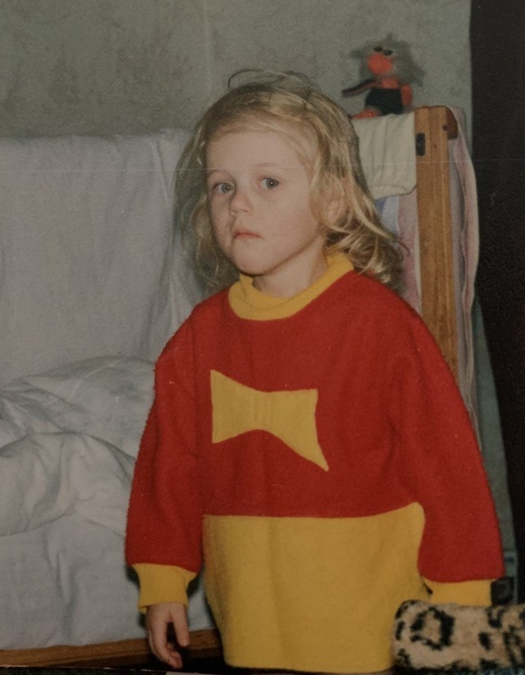
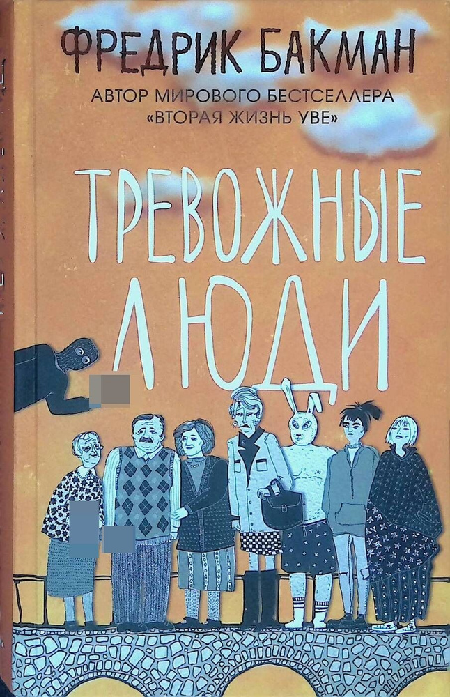

Regina Shumel
Cсылки на мои соц. сети:
О себе:
На данный момент работаю по специальности проектировщиком. Занимаюсь, если говорить простыми словами, благоустройством территорий. В свободное от работы время занимаюсь танцами (high heels), люблю прогулки на свежем воздухе и активный отдых, а также мне нравится периодически смотреть видеоролики и слушать подкасты про науку и психологию.
Почему я выбрала web-разработку:
Заинтересовала меня web-разработка пару лет назад. Когда я для себя поняла, что работа в проектировании это временный этап в жизни, я задумалась, чем я реально хочу заниматься. И, после долгих поисков, я открыла для себя вертску и начала заниматься самостоятельно (на ютубе очень много информации для самостоятельного обучения). Но часто сталкивалась с тем, что в процессе обучения возникали вопросы, а ответы не всегда находила. Да и структуры обучения не было: темы брала в разнобой, некоторая информация стала не актуальной и если делала перерыв в обучении, навыки быстро забывались. Поэтому курс в школе CodeGirl это мой осознанный выбор, о котором очень давно думала.
То, что я люблю:
- Фильм "Остpов проклятых" и постер к нему.
- Канал "А поговорить?" на ютубе.
- Канал про психологию "Справиться проще".
{kind=link}
А, ну и как я могла забыть свою любимую книгу автора Фредрика Бакмана 